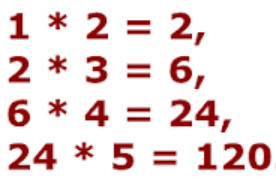

Actividad: Funciones de orden superior y listas de compresión
. |

Objetivos:
- Aplicar los conocimientos
sobre funciones de orden superior y listas de compresión.
- Reconocer la importancia del
uso de funciones para el diseño de un programa.

Modalidad:

Instrucciones:
- Implementa las siguientes funciones, recuerda
que las funciones se definen antes de la función del main y del
script principal.

Funciones de orden superior
.
- Definir
una función de orden superior llamada
operar, que recibe como parámetro dos
enteros y una función. En el cuerpo de la función llamar a la
función que llega como parámetro y enviar los dos primeros
parámetros. La función retorna un entero.
-
Definir
la función multiplicar,
que reciba dos números como parámetro de entrada: n1 y n2 y
regrese la multiplicación de los números.
-
Definir
la función dividir,
que reciba dos números como parámetro de entrada: n1 y n2 y
regrese la división de n1 entre n2.
-
En el
script principal de nuestro programa:
-
Llama
a la función operar
y le pasamos tres datos, dos enteros y uno con la
referencia de la función multiplicar.
Imprime el resultado.
-
Llama
a la función operar
y le pasamos tres datos, dos enteros y uno con la
referencia de la función dividir.
Imprime el resultado.
- A partir
de una lista de números enteros, obtener unicamente una lista los
números múltiplos de 5, empleando para ello la función de orden
superior de python filter()
y la función
lambda.
numeros = [2, 5, 10, 23,
50, 33]
- A partir
de una lista de números enteros positivos y negativos, obtener
unicamente una lista los números positivos, empleando para ello la
función de orden superior de python filter() y la
función lambda.
numeros = [2, -5, 10, -23,
-50, 33]
- A partir
de una lista de strings, obtener unicamente una lista con los
strings que comiencen con consonantes, empleando
para ello la función de orden superior de python
filter()
y la función lambda.
lista = ["juan", "Ana",
"Ernesto", "octavio", "Gabriela", "ulises", "Liliana"]
- A partir
de tres listas de números enteros del mismo tamaño, obtenga una
lista con la multiplicación de las tres listas, empleando para ello
la función de orden superior de python map()
y la función
lambda.
numeros1 =
[1, 2, 3, 4, 5]
numeros2 = [6, 7, 8, 9, 10]
numeros3 = [11, 12, 13, 14, 15]
- A partir
de una lista de números enteros realizar la multiplicación
acumulada de cada uno de los elementos que componen la lista usando
la función de orden superior reduce()
y la función lambda.
lista = [1,
2, 3, 4, 5]

Listas de compresión
- La función
menor_numero que recibe un número. La
función deberá regresar una nueva lista de números menores o
iguales al
número que llega como parámetro de una lista de números de entre 0 y 20.
Realiza esta función con el método tradicional.
Si el número
es 3 regresaría: [0, 1, 2, 3]
- Define la función
menor_numero2
haciendo uso de listas de comprensión.
- La función
remueve_fruta que recibe una lista de frutas
y el nombre de una fruta. La función deberá regresar una nueva
lista de frutas que contegan todas las frutas a excepción de la
fruta que llegó como parámetro. Realiza esta función con el método
tradicional.
frutas =
["Manzana", "Plátano", "Sandía", "Melón", "Papaya"]
Si la fruta
es 'Plátano' regresaría: ["Manzana", "Sandía", "Melón",
"Papaya"]
- Define la función
remueve_fruta2
haciendo uso de listas de comprensión.
- La función
frutas_mayusculas que recibe una lista de
frutas y regresa una nueva lista de frutas en mayúsculas. Realiza
esta función con el método tradicional.
frutas =
["Manzana", "Plátano", "Sandía", "Melón", "Papaya"]
La función
regresaría: ["MANZANA", "PLÁTANO", "SANDÍA", "MELÓN", "PAPAYA"]
- Define la función
frutas_mayusculas2
haciendo uso de listas de comprensión.
Guarda tus archivos como:
A12_Matricula.ipynb

Especificaciones
de entrega en Canvas:
- Formato de entrega: pdf
- Nombre de los entregables: A12_matricula.pdf
(Impresión de pantalla de tus programas con su ejecución)
- Medio de entrega: Se entrega en la sección de Actividad:
Funciones de orden superior y listas de compresión
|